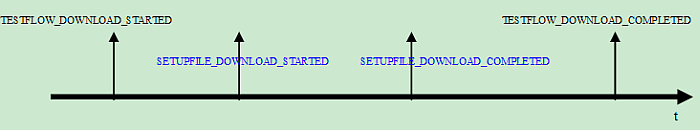

DownloadTestflow
This remote control command tries to download a specified test flow to the tester.
Downloading a test flow involves downloading of all setup files used in the test flow. During the downloading procedures, the status will be notified by asynchronous event. The figure below shows the sequence of the events coming up.

The SETUPFILE_DOWNLOAD_STARTED and
SETUPFILE_DOWNLOAD_COMPLETED will occur several times because the downloading
of each setup file will make these two events notified.
SUCCESSwill be returned if the command is successfully issued. Otherwise an error object indicating the error code, description and severity will be returned.
Code |
Typical Description |
Severity |
|---|---|---|
PARAMETER_EXCEPTION |
The value of the parameter "TESTFLOW_NAME" is empty and there is no test flow pre-loaded |
RECOVERABLE |
FILE_NOT_FOUND |
The testflow name "XXX" does not exist. |
RECOVERABLE |
ILLEGAL_OPERATION |
|
RECOVERABLE |
Dependency
A device is already set for the SmarTest session.
Parameters
I/O |
Parameter |
Description |
|---|---|---|
I |
SESSION_ID |
The ID of the SmarTest session to work with. |
I |
TESTFLOW_NAME |
The name of the test flow to download. |
Prototype
ParamList cmdParams;string sessionId;Status command("DownloadTestflow", cmdParams, sessionId);
Functional changes
- Introduced before SmarTest 6.3.2
- SmarTest 6.5.2: Empty input of TESTFLOW_NAME is supported.